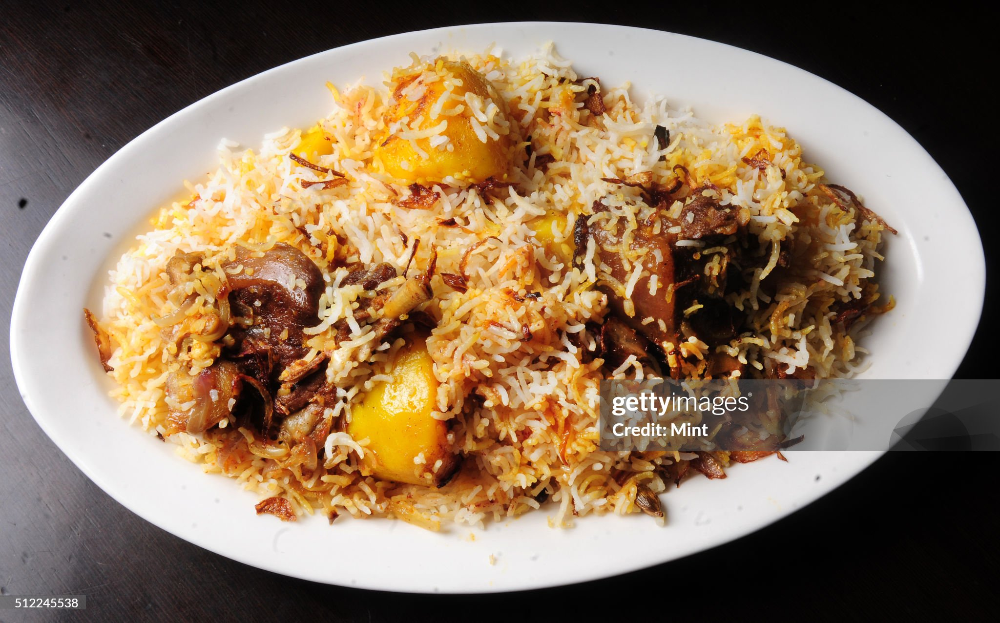

The perfect blend of sweet, spicy, and tangy flavors makes Bengali cuisine truly unique. Dishes like Shorshe Ilish, cooked in mustard sauce, and Aloo Posto, a simple yet flavorful poppy seed dish, are household favorites. Street food lovers relish puchkas, kathi rolls, and jhalmuri, which add to the state’s vibrant food culture. Sweets like Mishti Doi and Sandesh further highlight Bengal’s deep love for desserts. Whether at home or in bustling markets, food remains an integral part of Bengali identity and tradition.
